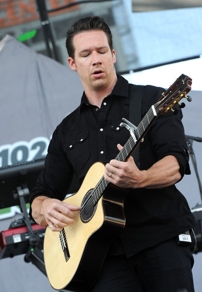

Zpěvák, model, kytarista. 37 let,narozen: 15. 9. 1978 Colorado, USA. Znamením Panna, Výška 186 cm. Zach, celým jménem Zachary Douglas Filkins se narodil 15. září 1978. Je to americký hudebník a model ale od roku 2007 je známý především jako frontman, kytarista a zpěvák skupiny OneRepublic. Dětství strávil intenzivním studiem klasické kytary ve španělské Barceloně. Navštěvoval křesťanskou střední školu Colorado Springs a na vysoké hrál ve školním fotbalovém týmu. Tam se setkal a spřátelil s Ryanem Tedderem a rozhodli se spolu založit skupinu. Později přibrali ještě Brenta Kutzle hrajícího na basu a cello a Eddieho Fishera hrajícího na bicí. Tak vznikla skupina OneRepublic. Před hudbou Filkins pracoval jako model, předváděl spodní prádlo a to pro značky jako Covington nebo Jockey. V současné době se věnuje především hudbě. V roce 2007 OneRepublic vydali debutové album Dreaming Out Loud, které obsahovalo singl "Apologize", který okamžitě vyskočil na první příčky hitparád. V roce 2009 vydali druhou skupinocvou desku, neméně úspěšnou, Waking up, se singly "All the Right Moves" a "Secrets". Zach Filkins je ženatý. Své manželce otevřeně poděkoval v poznámkách k nahrávce z debutového alba OneRepublic - Dreaming Out Loud. Mluví plynně španělsky.
